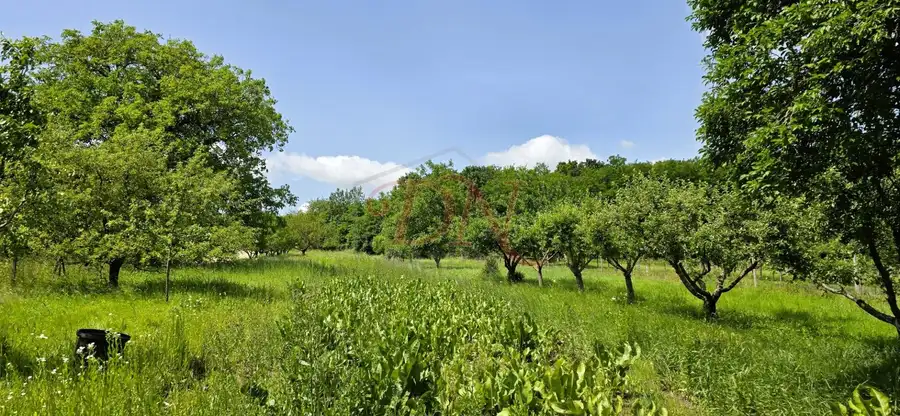
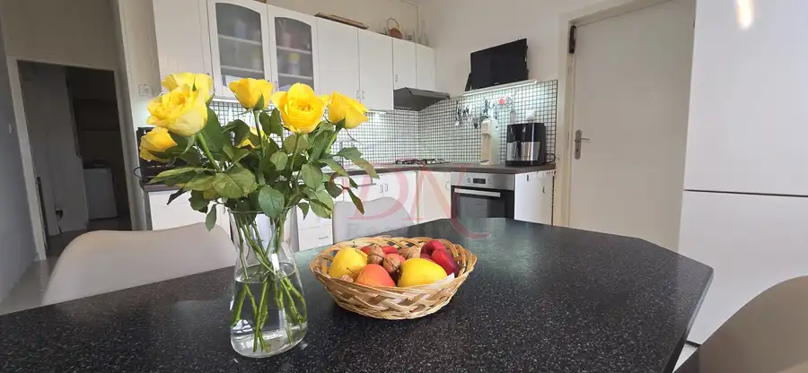
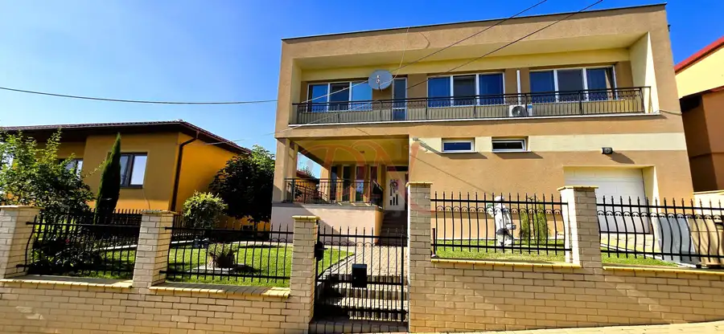

Pozemok na predaj, 1054 m2. Jelenec. Exkluzívne u nás.
Jelenec

- Plocha1054 m²
- VlastníctvoOsobné
O nehnuteľnosti
Helena Rakusová +421 905 123 387 , rakusova@dnreality.skRealitná kancelária DN reality vo výhradnom zastúpení ponúka na predaj pozemok na výstavbu rodinného domu. Pozemok sa nachádza v tichej časti obce . Tento krásny pozemok vám zaručí súkromie a dokonalé bývanie v rodinnom dome.Lokalita: JelenecPozemok: 1054 m2 Pozemok je umiestnený v zastavanom území obce.Obec Jelenec je veľmi vyhľadávaná lokalita v okolí Nitry nakoľko sa nachádza v lone prírody a pod pohorím Tríbeč, len 13 km od centra okresného mesta a zároveň krajského mesta Nitra a 6 km od diaľničného napojenia na R1 v Beladiciach. Obec Jelenec je stredisková obec s veľmi dobrou občianskou vybavenosťou. Nachádza sa tu škola, škôlka, obchody, pošta, reštaurácie, pizzéria, Obec je obklopená pohorím Tríbeč, práve preto je vyhľadávanou lokalitou pre hubárov, turistov a pre každého kto má rád prírodu .Je tu možnosť turistiky, rybolovu v dvoch jazerách , nad obcou sa týči zrúcanina hradu Gýmeš, Múzeum rodu Forgach, rekreačné zariadenie Obce Jelenec ( Ubytovanie u Forgácha), je to veľmi vybudovaná a pekná obec stvorená na pokojné bývanie alebo podnikanie . V obci sa koná veľké množstvo kultúrnych akcií aj koncertov. Za spoločenským vyžitím nemusíte cestovať.Tento pozemok vás určite osloví svojim umiestnením a tichou lokalitou. Svoj vysnívaný dom si tu môžete postaviť a zároveň si splniť sen o bývaní v rodinnom dome . Je to aj zároveň výborná investičná príležitosť.Cena: 60.000 EurUvedená cena je vrátane kompletného právneho servisu, autorizovaných zmlúv spolupracujúcej advokátskej kancelárie a poplatkov spojených s prevodom vlastníckych práv. Nehnuteľnosť predávame so súhlasom majiteľa.
Parametre
- Druh
- Pozemok pre rodinné domy
- Dátum zverejnenia
- 11. 06. 2025
- Elektrina
- Nedostupné
- Funkčné využitie
- Výstavba rodinného domu
- Odpadové vody
- Nedostupné
- Plocha pozemku
- 1054 m²
- Plyn
- Nedostupné
- Pripravenosť k výstavbe
- Schválené v územnom pláne
- Terén pozemku
- Rovinatý
- Typ
- Predaj
- Vlastníctvo
- Osobné
- Voda
- Nedostupné
- Voľnočasové aktivity
- Rybolov, Turistika, Cykloturistika
- Územie
- Intravilán
Kde to je


Mohlo by Vás zaujímať

BytNové 189 000 €EXKLUZÍVNE | Priestranný, veľkometrážny 4-izbový byt, 103 m² s balkónom a veľkým šatníkom – Nitra Nitra 4-izbový102.66 m²4. podlažie
DomNové 255 000 €Priestranný 4-izbový rodinný dom s bazénom na slnečnom pozemku 805 m2 – Veľký Lapáš. Exkluzívne u nás. Veľký Lapáš 200 m²